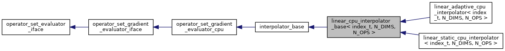
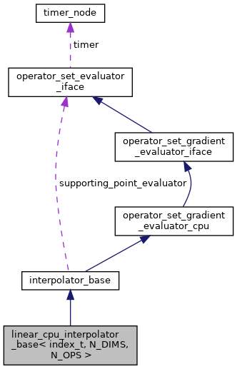

Interpolator base for static/adaptive piecewise linear interpolator. More...
#include <linear_cpu_interpolator_base.hpp>


Public Member Functions | |
| linear_cpu_interpolator_base (operator_set_evaluator_iface *supporting_point_evaluator_, const std::vector< int > &axes_points_, const std::vector< double > &axes_min_, const std::vector< double > &axes_max_) | |
| Construct an interpolator with specified parametrization space. More... | |
| int | get_n_dims () |
| Get the number of dimensions in interpolation space. More... | |
| int | get_n_ops () |
| Get the number of operators to be interpolated. More... | |
| int | interpolate (const std::vector< double > &point, std::vector< double > &values) override |
| Compute interpolation for all operators at the given point. More... | |
| int | interpolate_with_derivatives (const std::vector< double > &points, const std::vector< int > &points_idxs, std::vector< double > &interp_values, std::vector< double > &derivatives) override |
| Compute interpolation and its gradient for all operators at every specified point. More... | |
 Public Member Functions inherited from interpolator_base Public Member Functions inherited from interpolator_base | |
| interpolator_base (operator_set_evaluator_iface *supporting_point_evaluator_, const std::vector< int > &axes_points_, const std::vector< double > &axes_min_, const std::vector< double > &axes_max_) | |
| Construct an interpolator with predefined parametrization space. More... | |
| virtual int | init () |
| Initialize interpolator, perform internal sanity checks unavailable at construction time. More... | |
| int | evaluate (const std::vector< double > &state, std::vector< double > &values) |
| Evaluate all operators at the given state (point in parametrization space) Runs timer and calls virtual interpolate routine. More... | |
| int | evaluate_with_derivatives (const std::vector< double > &states, const std::vector< int > &states_idxs, std::vector< double > &values, std::vector< double > &derivatives) |
| Evaluate operators and their gradient for every specified state (point in parametrization space) More... | |
| int | get_axis_n_points (int axis) |
| Get the number of supporting points for the given axis. More... | |
| double | get_axis_min (int axis) |
| Get the parametrization minimum value for given axis. More... | |
| double | get_axis_max (int axis) |
| Get the parametrization maximum value for given axis. More... | |
| uint64_t | get_n_interpolations () |
| Get the number of interpolations that took place. More... | |
| uint64_t | get_n_points_total () |
| Get the total number of supporting points in parameter space. More... | |
| uint64_t | get_n_points_used () |
| Get the number of supporting points used (evaluated through supporting_point_evaluator_) The number is equal to n_points_total_ for static interpolation methods. More... | |
| Public Member Functions inherited from operator_set_evaluator_iface | |
| operator_set_evaluator_iface () | |
| Construct a new operator set evaluator iface object. More... | |
| void | init_timer_node (timer_node *timer_) |
| Initialize timer node to provide timing for operator set evaluation. More... | |
Protected Member Functions | |
| void | FindHypercube (const std::vector< double > &points, std::array< int, N_DIMS > &hypercube, std::array< double, N_DIMS > &scaled_point, const int point_index=0) |
| Given the coordinate of a point, the function computes the hypercube where the point is located and its scaled coordinate inside the hypercube. More... | |
| void | FindSimplex (const std::array< int, N_DIMS > &hypercube, const std::array< double, N_DIMS > &scaled_point, std::array< int, N_DIMS > &tri_order, std::array< std::array< int, N_DIMS >, N_DIMS+1 > &simplex) |
| Compute which simplex the given point is located in using standard triangulation. More... | |
| virtual void | GetSupportingPoint (const std::array< int, N_DIMS > &vertex, std::array< double, N_OPS > &values)=0 |
| Get values of operators at the given supporting point Implementation depends on underlying storage. If static storage is used, the function simply reads operator values of the given supporting point from the the storage. If adaptive storage is used, the function checks whether the values were computed before, if yes, the value is directly returned; if not, the function computes the values, stores them and then returns. More... | |
| index_t | GetIndexFromVertex (const std::array< int, N_DIMS > &vertex) |
| Given a supporting point, compute its index. More... | |
| void | GetPointFromVertex (const std::array< int, N_DIMS > &vertex, std::vector< double > &point) |
| Transfer a vertex to its coordinates. More... | |
Protected Attributes | |
| std::array< std::array< int, N_DIMS >, N_DIMS+1 > | standard_simplex_ |
| a standard simplex More... | |
| std::array< index_t, N_DIMS > | axes_mult_ |
| int | transform_last_axis |
| multiplication factor used for transferring supporting point to point index More... | |
| Protected Attributes inherited from interpolator_base | |
| const std::vector< int > | axes_points_ |
| number of supporting points along each axis More... | |
| const std::vector< double > | axes_min_ |
| minimum at each axis More... | |
| const std::vector< double > | axes_max_ |
| maximum of each axis More... | |
| operator_set_evaluator_iface * | supporting_point_evaluator_ |
| object which computes operator values for supporting points More... | |
| std::vector< double > | axes_step_ |
| the distance between neighbor supporting points for each axis More... | |
| std::vector< double > | axes_step_inv_ |
| inverse of step (to avoid division) More... | |
| uint64_t | n_interpolations_ |
| Number of interpolations that took place. More... | |
| uint64_t | n_points_total_ |
| Total number of parametrization points. More... | |
| double | n_points_total_fp_ |
| Total number of parametrization points in floating point format, to detect index overflow in derived classes. More... | |
| uint64_t | n_points_used_ |
| Number of parametrization points which were used (equal to n_points_total_ for static interpolators) More... | |
| std::vector< double > | new_point_coords |
| intermediate storage for supporting point generation More... | |
| std::vector< double > | new_operator_values |
| intermediate storage for supporting point generation More... | |
Additional Inherited Members | |
| Public Attributes inherited from operator_set_evaluator_iface | |
| timer_node * | timer |
Detailed Description
template<typename index_t, int N_DIMS, int N_OPS>
class linear_cpu_interpolator_base< index_t, N_DIMS, N_OPS >
Interpolator base for static/adaptive piecewise linear interpolator.
- Template Parameters
-
index_t index type used for supporting point indexing N_DIMS The number of dimensions in parameter space N_OPS The number of operators to be interpolated
Definition at line 39 of file linear_cpu_interpolator_base.hpp.
Constructor & Destructor Documentation
◆ linear_cpu_interpolator_base()
| linear_cpu_interpolator_base< index_t, N_DIMS, N_OPS >::linear_cpu_interpolator_base | ( | operator_set_evaluator_iface * | supporting_point_evaluator_, |
| const std::vector< int > & | axes_points_, | ||
| const std::vector< double > & | axes_min_, | ||
| const std::vector< double > & | axes_max_ | ||
| ) |
Construct an interpolator with specified parametrization space.
- Parameters
-
[in] supporting_point_evaluator_ Object used to compute operators values at supporting points [in] axes_points_ Number of supporting points (minimum 2) along axes [in] axes_min_ Minimum value for each axis [in] axes_max_ Maximum for each axis
Member Function Documentation
◆ FindHypercube()
|
protected |
Given the coordinate of a point, the function computes the hypercube where the point is located and its scaled coordinate inside the hypercube.
- Parameters
-
[in] points The array of coordinates of points [out] hypercube The lower-left vertex of the hypercube [out] scaled_point The scaled coordinate of the given point inside the hypercube [in] point_index Index of the point in the std::vector points The argument point_index is used only when std::vector points consists of multiple points.
◆ FindSimplex()
|
protected |
Compute which simplex the given point is located in using standard triangulation.
- Parameters
-
[in] hypercube The lower-left vertex of the hypercube [in] scaled_point The scaled coordinate of the given point inside the hypercube [out] tri_order The order of the scaled coordinate which is used for - finding simplex for standard triangulation
- computing weights of the barycentric interpolation
[out] simplex An array of vertices which forms simplex in N_DIMS-dimensional space
◆ GetIndexFromVertex()
|
protected |
Given a supporting point, compute its index.
This function is used as a hash for std::array<int, N_DIMS>.
- Parameters
-
[in] vertex The indexes of coordinates the given supporting point along axes
- Returns
- The index of point among all supporting point
◆ get_n_dims()
|
inlinevirtual |
Get the number of dimensions in interpolation space.
Implements interpolator_base.
Definition at line 58 of file linear_cpu_interpolator_base.hpp.
◆ get_n_ops()
|
inlinevirtual |
Get the number of operators to be interpolated.
Implements interpolator_base.
Definition at line 64 of file linear_cpu_interpolator_base.hpp.
◆ GetPointFromVertex()
|
protected |
Transfer a vertex to its coordinates.
- Parameters
-
[in] vertex The indexes of the given supporting point along axes [out] point The coordinates of the supporting point
◆ GetSupportingPoint()
|
protectedpure virtual |
Get values of operators at the given supporting point Implementation depends on underlying storage. If static storage is used, the function simply reads operator values of the given supporting point from the the storage. If adaptive storage is used, the function checks whether the values were computed before, if yes, the value is directly returned; if not, the function computes the values, stores them and then returns.
- Parameters
-
[in] vertex The indexes of coordinates the given supporting point along axes [out] values The operator values at the given point
◆ interpolate()
|
overridevirtual |
Compute interpolation for all operators at the given point.
- Parameters
-
[in] point Coordinates in parametrization space [out] values Interpolated values
- Returns
- 0 if interpolation is successful
Implements interpolator_base.
◆ interpolate_with_derivatives()
|
overridevirtual |
Compute interpolation and its gradient for all operators at every specified point.
- Parameters
-
[in] points Array of coordinates in parametrization space [in] points_idxs Indexes of points in the points array which are marked for interpolation [out] values Interpolated values [out] derivatives Interpolation gradients
- Returns
- 0 if interpolation is successful
Implements interpolator_base.
Member Data Documentation
◆ axes_mult_
|
protected |
Definition at line 88 of file linear_cpu_interpolator_base.hpp.
◆ standard_simplex_
|
protected |
a standard simplex
Definition at line 87 of file linear_cpu_interpolator_base.hpp.
◆ transform_last_axis
|
protected |
multiplication factor used for transferring supporting point to point index
apply transformation z'=1-z for the last axis
Definition at line 90 of file linear_cpu_interpolator_base.hpp.
The documentation for this class was generated from the following file: